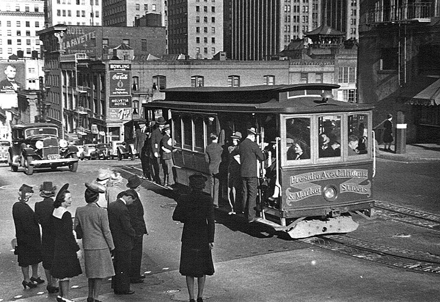

This is our Past city! The world is a completely different place different, there are ports full of ships coming in everyday! Once you step off the time machine you're presented the pier full of bars and brothels, that many, if not all the sailors visit regularly!
